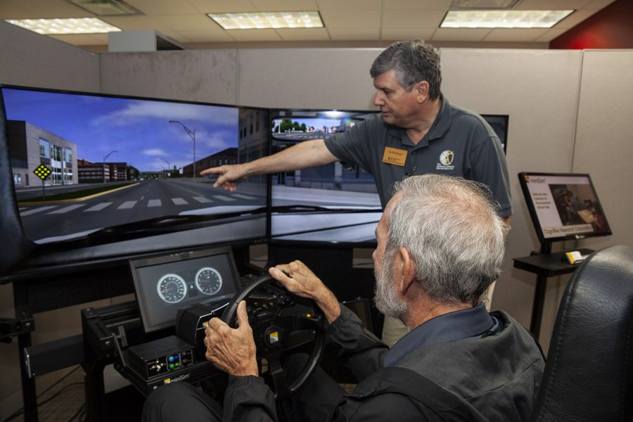
Contribution and The Result
Built the QS-S25 6 degrees of motion simulator from the ground up using mechanical tools such as an engine hoist, torque wrenches, and alignment gauges. Conducted preliminary research and developed a system integration plan involving VR sensors and a custom-built throttle pedal (repurposed from a real car), in preparation for supporting my professor’s research project in the upcoming Fall 2025 semester
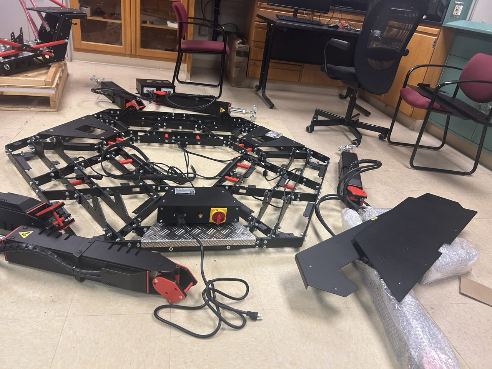
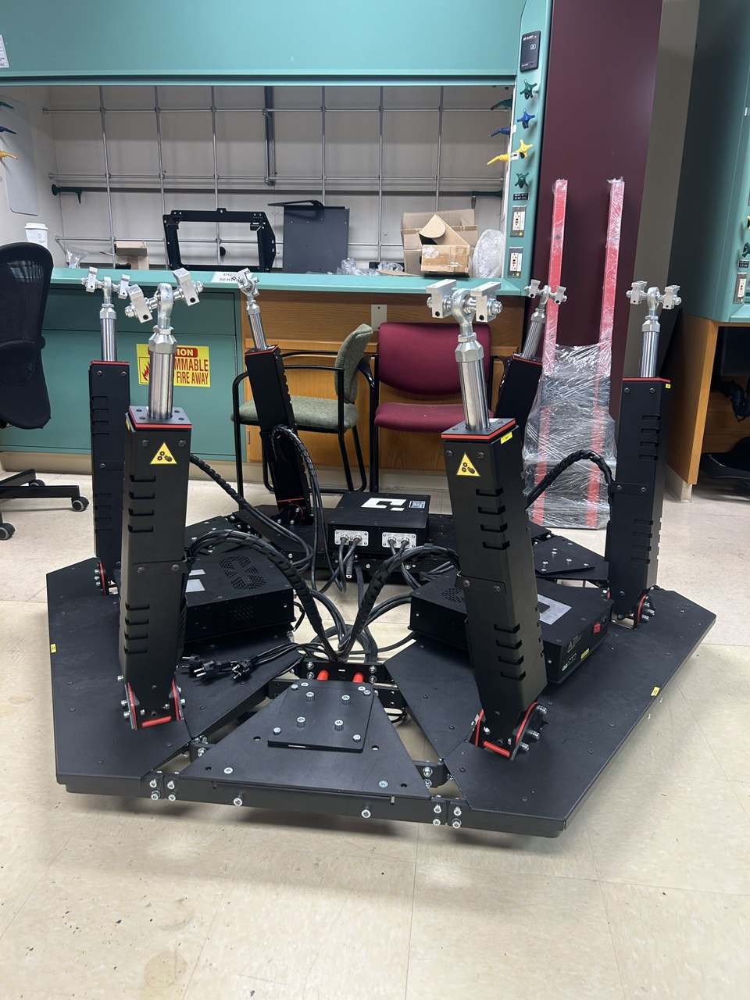
 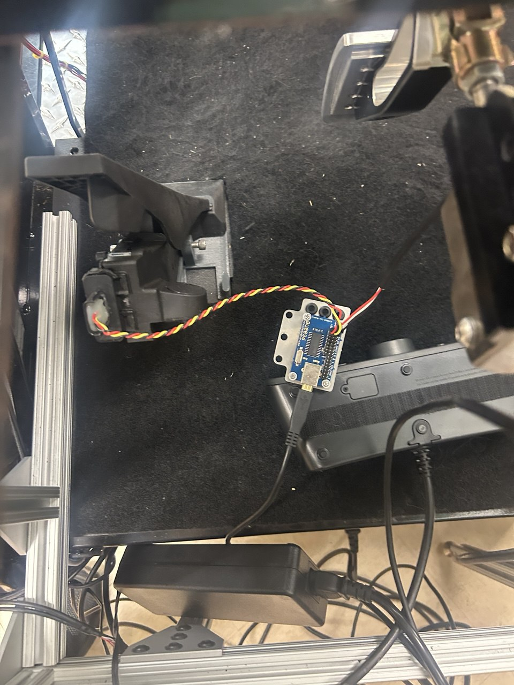
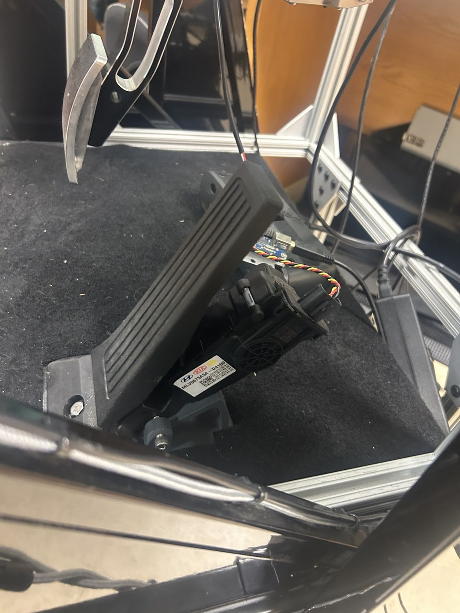
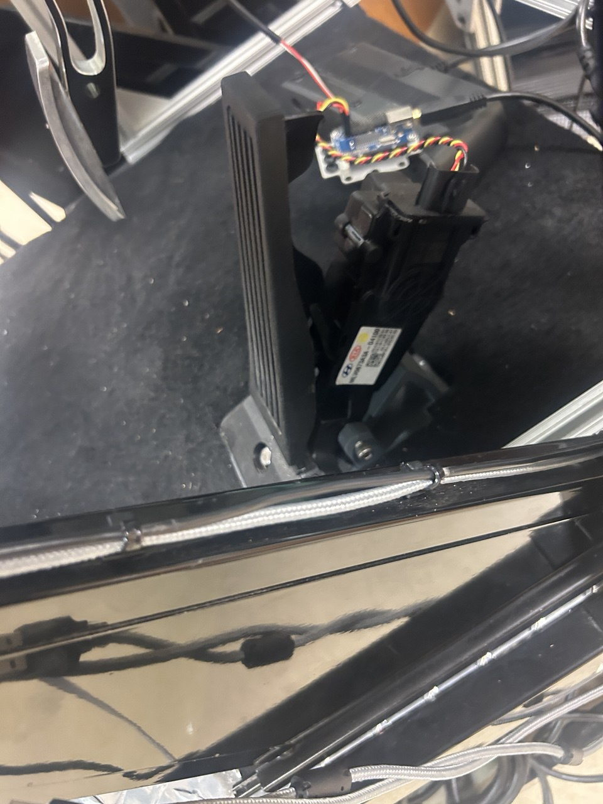
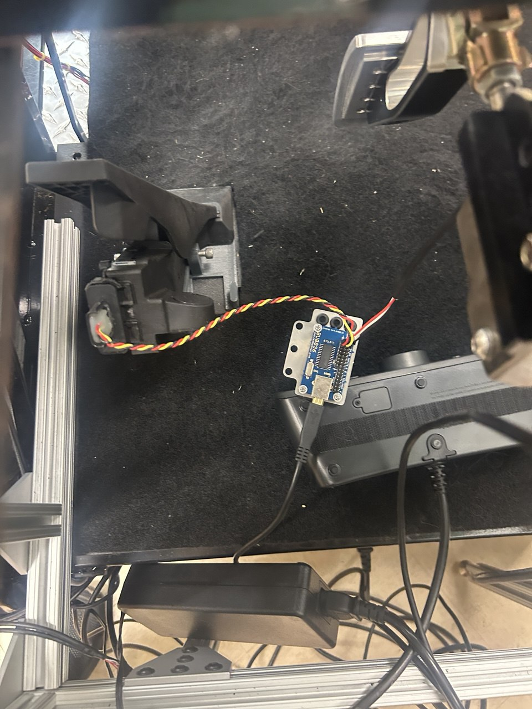
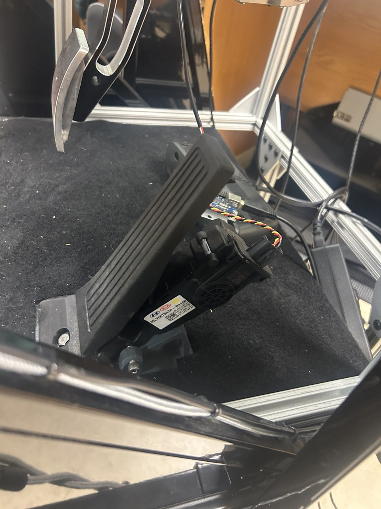
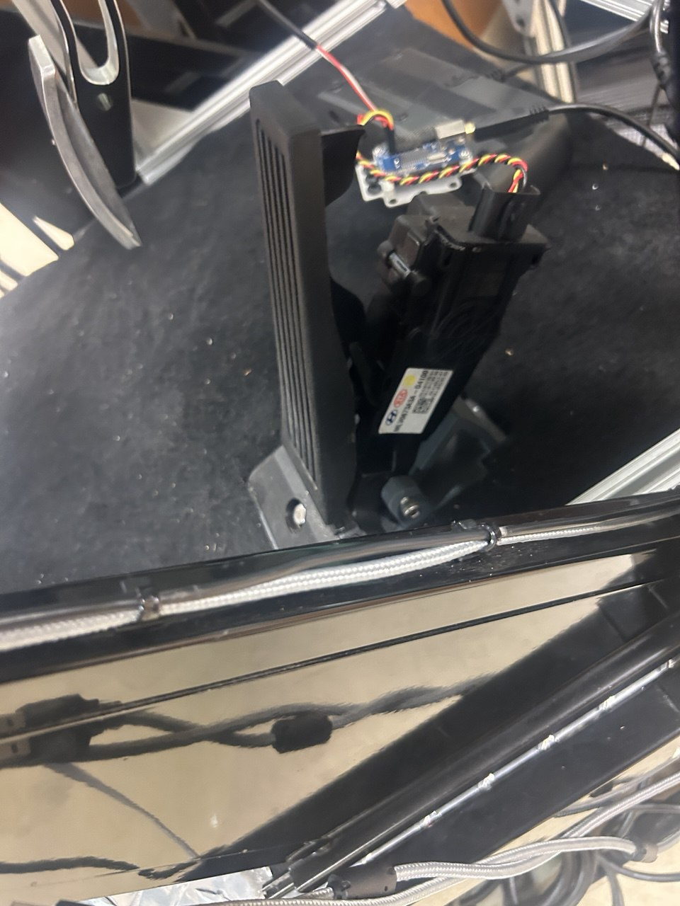
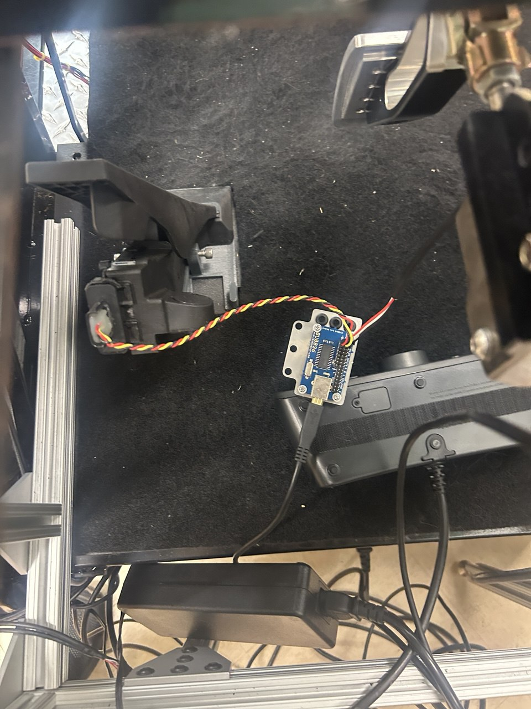
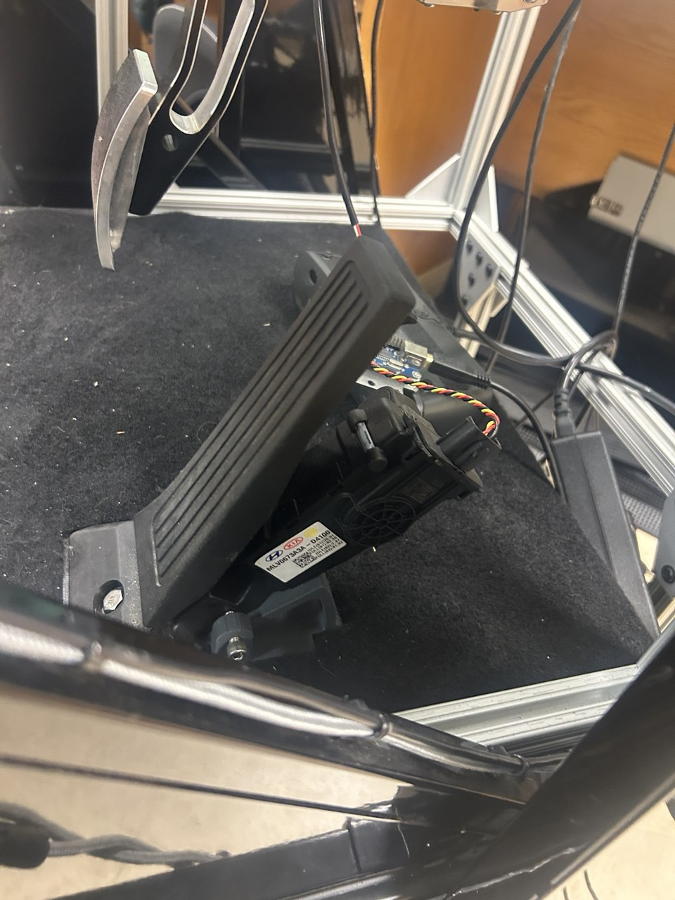
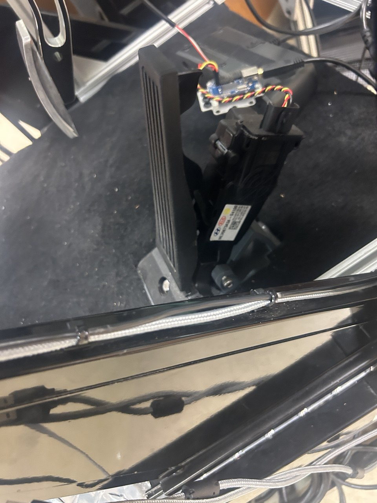